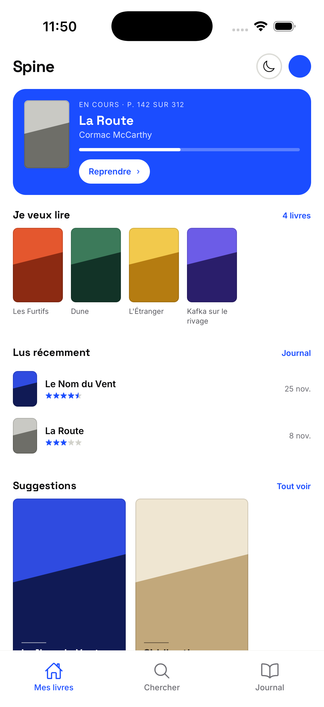

01
Mes livres — la bibliothèque avant le flux
| Chez Goodreads, l'accueil est un flux d'amis ; ce qu'on lit soi-même est relégué. | L'écran s'ouvre sur une carte « En cours », seul aplat de couleur de l'app, avec progression et bouton « Reprendre ». |
| Envies et lectures sont dans le même sac d'« étagères ». | Deux blocs distincts : Je veux lire, puis Lus récemment avec note et date. |
| Découvrir demande un onglet séparé. | Les suggestions vivent en bas, avec leur motif écrit en clair. |